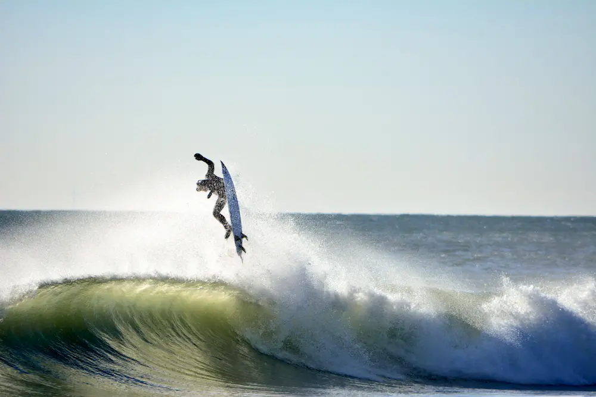
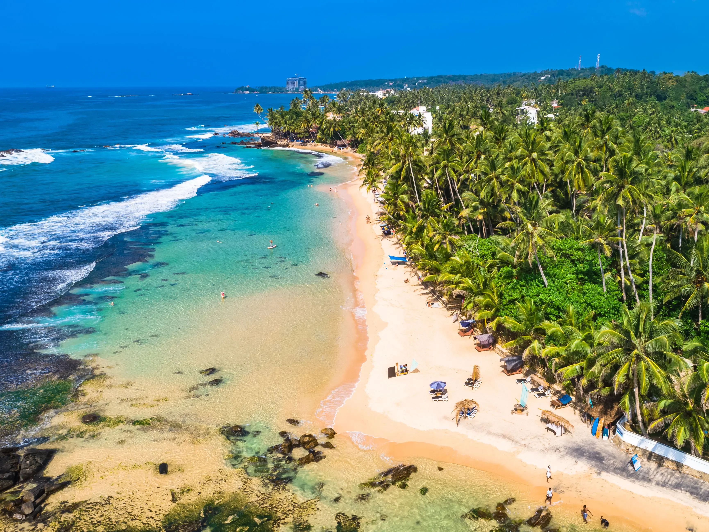

Sri Lanka is known as Pearl of the Indian Ocean.The capital city of Sri Lanka is Colombo.The current president is Hon.Gotabaya Rajapaksa.The major religions here are Buddhism,Hinduism,Christianity and Islamic.The mother tongue is Sinhala.Sri Lanka has the tallest tower in South Asia,The Lotus Tower.
Proximity to the Indian subcontinent has facilitated close cultural interaction between Sri Lanka and India from ancient times. At a crossroads of maritime routes traversing the Indian Ocean, Sri Lanka has also been exposed to cultural influences from other Asian civilizations. Ancient Greek geographers called it Taprobane. Arabs referred to it as Serendib. Later European mapmakers called it Ceylon, a name still used occasionally for trade purposes. It officially became Sri Lanka in 1972.
The distinctive civilization of Sri Lanka, with roots that can be traced back to the 6th century BCE, is characterized by two factors: the preservation of Theravada Buddhism (the orthodox school of Buddhism having its literary traditions in the Pali language) and the development over two millennia of a sophisticated system of irrigation in the drier parts of the country. This civilization was further enriched by the influences of Hinduism and Islam.
In 1948, after nearly 150 years of British rule, Sri Lanka became an independent country, and it was admitted to the United Nations seven years later. The country is a member of the Commonwealth and the South Asian Association for Regional Cooperation.
Colombo, which emerged as the main urban centre during British rule, remains the executive and judicial capital of Sri Lanka; Sri Jayewardenepura Kotte, a Colombo suburb, is the legislative capital. For administrative purposes, the country has been divided into nine provinces and subdivided into 25 districts.
Sri Lanka’s Big Five – leopard, elephant, sloth bear, blue whale, and sperm whale – are known as the country’s great wildlife attractions.It is also renowned as a birder’s paradise with an array of endemic, migratory, and resident avifauna found in its 70 Important Bird Areas strewn across its diverse landscape. Sri Lanka is also famous for its abundance of exotic flora.

Other than taking a dip in the oceans or snorkelling, scuba diving and surfing are the most popular beach sports in the country. Scuba diving has long history in the country.Although comparatively new to the country surfing too has made its mark in the Southern and Eastern coasts of the island for the last twenty five years.

Sri Lanka is a tropical island found in the deep blue waters of the Indian Ocean and the Bay of Bengal. The country is endowed with over a thousand miles of beautiful golden beaches that are fringed with coconut palms making it the ideal destination for a beach holiday. A large percentage of luxurious resorts and villas as well as budget hotels are located along the coastal areas.
Upcoming Events
Binara Poya(01/09/2020)
This day is celebrated by Buddhists.Binara Poya is the day when Sri Lankan Buddhists commemorate the establishment of the Bhikkhuni Sasanaya (Bhikkhuni Sangha) or Order of the Female Buddhist Monastic.
Milad-Un-Nabi(29/10/2020)
This day is celebrated by Islams.This is the observance of the birthday of Islamic prophet Muhammad which is commemorated Rabi'al-awwal, the third month in the Islamic calendar.
Deepavali(14/11/2020)
This day is celebrated by Hindus.This is Festival of lights, usually lasting five days and celebrated during the Hindu Lunisolar month Kartika.It symbolizes the spiritual "victory of light over darkness, good over evil, and knowledge over ignorance".
Getting Around
Meet our transport team.We assure you they are the best at their jobs.They too speak many languages like our guides but with excellent driving skills as safety of our customers is one of our priorties.
Meet our transport team.We assure you they are the best at their jobs.They too speak many languages like our guides but with excellent driving skills as safety of our customers is one of our priorties.
About this site
This is a tourism contexted site.It has pages of local attractions,accomadations,contact,transport,tips to visit Sri Lanka.Transport page is to book vehicle of preference.Local attractions has details of few tourist attractions.Accomadation has details about few hotels.Tips has tips to visit Sri Lanka.Contact page has details of the company.